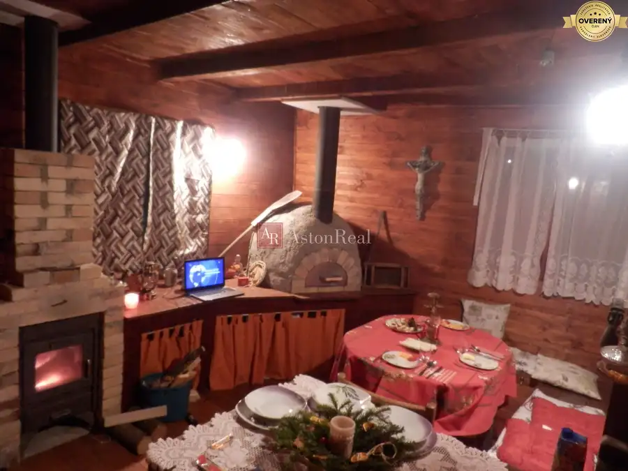
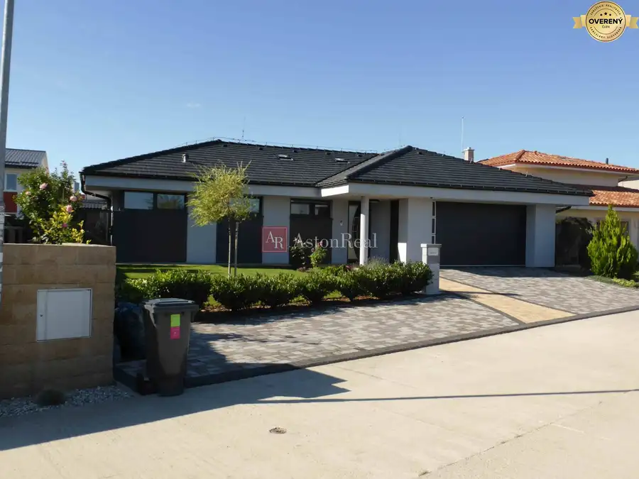
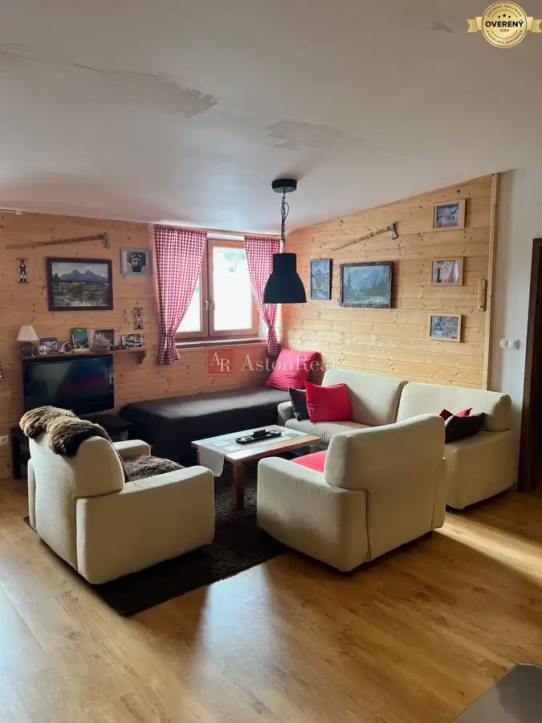

Predaj · Záhrady
PREDAJ: Záhrada, rozlohou 392 m2 nad Tulskou - Banská Bystrica
Banská Bystrica
19 000 €48 € za m²
- Plocha392 m²
- Vlastníctvoosobné
O nehnuteľnosti
Astonreal ponúka na predaj záhradu v záhradkárskej oblasti nad ul. Moskovskou v Banskej Bystrici. Celková výmera záhrady je 392 m2, je mierne svahovitá, výhľad z nej - tvorí nádhernú prírodnú scenériu. Ak hľadáte miesto, kde si oddýchnete od mestského zhonu, vypestujete si vlastnú zeleninu a načerpáte energiu zo slnka, tato ponuka je pravé pre vás. Na pozemku rastú ovocné stromy, nachádza sa tu plechová búda na uskladnenie náradia, možnosť výstavby chatky (k dispozícii je aj projekt). Pár minút peso od autobusovej zastávky, ale aj bezproblémový prístup autom priamo pred záhradu. Záhrada je bez pripojenia na vodu a elektrinu. V prípade záujmu, viac info o danú nehnuteľnosť kontaktujte: ,
Parametre
| Rozloha pozemku | 392 m² |
|---|---|
| Vlastníctvo | osobné |
| Voda | nie |
| El. napätie | nie |
| Plyn | nie |
| Kanalizácia | nie |
| Terén | mierny svah |
| Dátum zverejnenia | 25. 4. 2025 |
Kde to je
Ďalšie ponuky
Celá ponukaMohlo by Vás zaujímať

Chaty a chalupy10 137 000 €PREDAJ: DOM (CHALUPA) zastavaná plocha 135 m2 - Moštenica Moštenica 3-izbový150 m² AstonReal vo výhradnom zastúpení majiteľa ponuka na predaj rodinný dom/chalupu v obci Moštenica. Dom sa nachádza priamo v centre obci, tichom a…
Rodinné domy2 600 000 €HĽADÁME pre nášho klienta NOVOSTAVBU/ rodinný dom v Banskej Bystrici 3-izbový600 m² AstonReal súrne hľadá pre klienta NOVOSTAVBU rodinného domu - Banská Bystrica. Za ponuky vopred ďakujem. V prípade záujmu ma prosím kontaktujte na…
Apartmány10 Cena dohodouExkluzívne! Na predaj 2 izb. apartmán s krbom v AD Panoráma - Donovaly Donovaly 2-izbový64 m² AstonReal ponuka na predaj 2 izb. apartmán, 64m2 v apartmánovom dome Panoráma v obľúbenom lyžiarskom stredisku Donovaly. Donovaly sú celoročne…